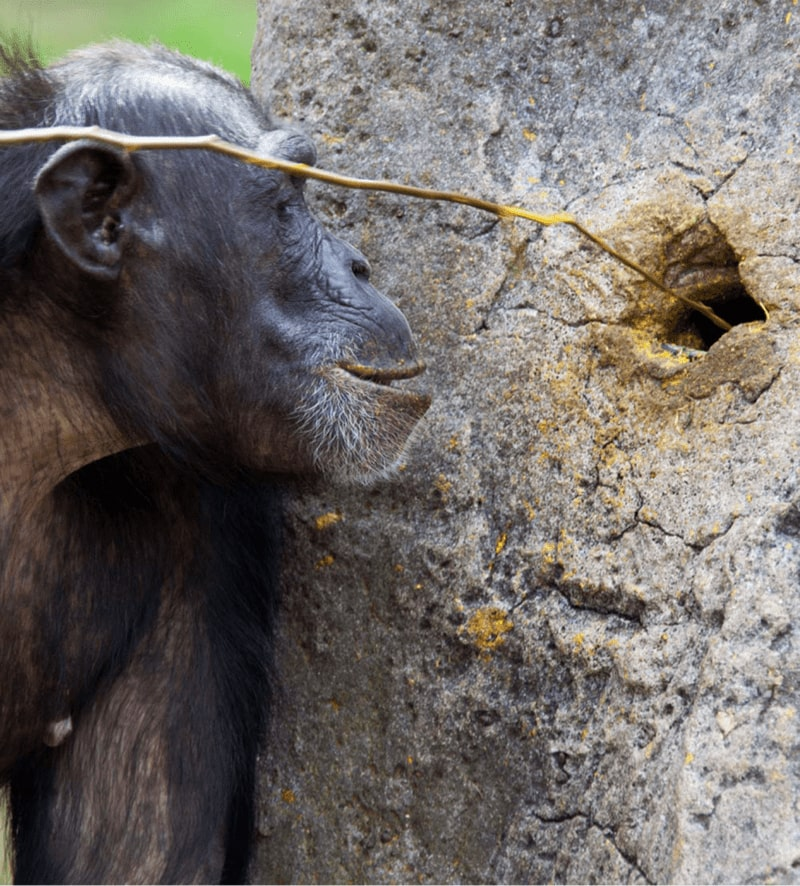
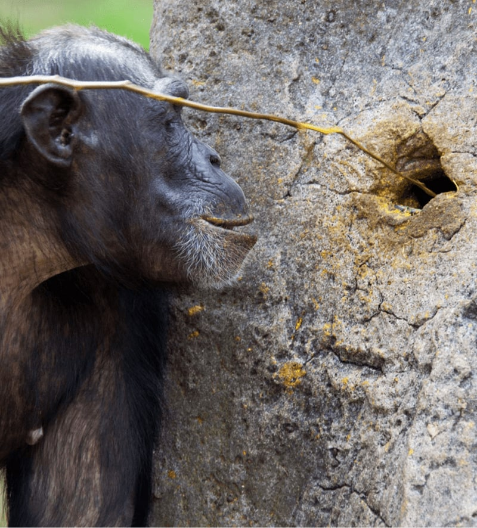

“ES INCREÍBLE LO QUE SUCEDE CUANDO TE DAS CUENTA EL CAMBIO QUE PUEDES HACER”

Jane Goodall cree fervientemente que una vez que las personas se dan cuenta de su poder para marcar la
diferencia en la vida de sus familias, comunidades y medio ambiente, no hay vuelta atrás, solo avance.
Es así como, a través de su instituto, ayuda a que un éxito conduzca a otro a medida que se construye
el impacto que se busca: restaurar el hábitat crítico para salvar a los chimpancés de la extinción;
mejorar la salud de las mujeres y la educación de las niñas; cultivar medios de vida locales en armonía
con la naturaleza; ayudar a los jóvenes a convertirse en la generación informada de líderes de
conservación que el mundo necesita con tanta urgencia a través de los programas juveniles Roots & Shoots
entre otros.
Desde el día en que comenzó su legendaria investigación de chimpancés en Gombe, Jane adoptó un enfoque poco ortodoxo en el estudio. Se sumergió en el hábitat forestal con la perspectiva de una mente despejada de la academia. Estableció un nuevo estándar para el estudio de los simios en la naturaleza, experimentando su compleja sociedad como un "vecino" en lugar de un observador remoto, y llegando a conocerlos e interactuar con ellos como individuos durante muchos años. Con los ojos abiertos y la mente abierta, la Dra. Jane Goodall hizo descubrimientos que sacudieron el mundo científico, cambiando para siempre la forma en que vemos a nuestros parientes vivos más cercanos, y a nosotros mismos.
 

En la década de 1960, cuando comenzó la investigación, la característica definitoria del hombre era
que
él solo, entre "todas las criaturas de Dios", hacía herramientas.
Un día, moviéndose silenciosamente por la jungla en busca de los chimpancés, Jane se encontró con un
gran montículo de termitas. David Greybeard (nombre que le puso a un gorila macho) se sentó a su lado.
Ella observó como, una y otra vez, él tocaba largas y resistentes briznas de hierba en un agujero, las
retiró y arrancó las termitas con los labios. Cuando terminó de comer, Jane inspeccionó el montículo
y
las hojas de hierba que había dejado detrás. Metió uno en el agujero y lo retiró. Una docena o más de
termitas se aferraron al tallo. Unas semanas más tarde, vería a los chimpancés hacer herramientas, rompiendo pequeñas ramas frondosas de los árboles y quitándoles las hojas antes de meterlas en los
agujeros
de termiteros.
El descubrimiento de Jane fue la charla del mundo científico, haciendo que Leake proclamara: “Ahora
debemos
redefinir "Herramienta", redefinir "hombre" o aceptar a los chimpancés como humanos ".
Stephen Jay Gould de Harvard llamaría su observación "uno de los grandes logros de la erudición del
siglo
XX".
A lo largo de los 60 años de su trabajo Jane impacto al mundo no solo con sus descubrimientos en el campo de
investigación si no, también, buscando crear una comunidad mundial de vida alternativa y sostenible para
la conservacion de especies y el medio ambiente.
Hoy busca mejorar y proteger el mundo que todos compartimos.
PROYECTOS
INVESTIGACIÓN
Cuando Jane entro al bosque de Gombre el mundo sabia poco sobre los chimpancés y
menos aún de los parecidos que estos tenían con los humanos. Con el estudio de investigación que
hizo se abrieron las puertas a un universo extraordinario.
En 1977 fundo el Instituto de Jane Goodall buscando continuar la investigación con los chimpancés y,
ademas, multiplicar y expandir los esfuerzo de protección y conservación de la especie en junto de
la creación de un ambiente educacional.
El Instituto ( y Jane a través de este ) continúa cambiando vidas. Partiendo de la base de la
investigación que tuvo Goodall en su primera etapa; actualmente se continua aprendiendo acerca de los
chimpancés en el mundo y se siguen haciendo descubrimientos impresionantes sobre los mandriles y
otros primates.
OBSERVACIÓN
En 1991 junto con el Instituto Jane Goodall Jane fundo el Santuario Tchimpounga para proteger a todos
los chimpancés huérfanos, resultado del comercio ilegal de animales silvestres. También estableció
el Centro de Rehabilitación de Chimpancés de Tchimpounga. En 1994 comenzó una comunidad, en
Tanzania Occidental, de conservación. Conocido como la Reforestación y Educación de la Cuenca del
Lago Tanganyika (TACARE); el proyecto fue piloto para abordar la
pobreza, los medios de vida sostenibles en las aldeas alrededor del lago y la prevención de la
rápida degradación de los recursos naturales.
A partir de este piloto, y en apoyo con el Instituto la
Dra. Goodall ha creado y establecido diferentes planes de acción para la conservación formal a lo
largo de África y
el mundo.
EDUCACIÓN
Viendo el cambio y la diferencia que una sola persona puede hacer Jane fue a Tanzania donde trabajo, con
un grupo de estudiantes, buscando formas en que la juventud pudiese ayudar a crear un mundo mejor.
Fue así como, en 1991 se inicio el proyecto ROOTS & SHOOTS buscando colocar el poder y los recursos en
soluciones creativas y practicas.
Después de 29 años ROOTS & SHOOTS se expandió en el mundo llegando a casi 100 países y estableciendo
una red de jóvenes que comparten la ética de conservación de Goodall y toman acción para hacer de
este un mundo mejor para las personas, los animales y el medio ambiente.
Además, después de su innovadora investigación en Gombe, Jane fue una inspiración para las mujeres
alrededor del mundo. El campo de la primatología, que antes tenia una gran abstinencia de figuras
femeninas en el, hoy es dirigido por mujeres.
ACTIVISMO
Según la definición de un "ser activista" este es alguien que, este donde este o haga lo que haga
piensa en alguien/algo que este más allá de ella/él o sus seres queridos; ser activista es primordiar
la acción ; la dedicación intensa a alguna linea de acción en la vida. La pasión y preocupación por
los animales estuvo siempre presente en la vida de Jane.
En 1986, fue su primera conferencia sobre el 'entendimiento de los chimpancés' donde cambio su enfoque
a un acercamiento animal humano más holístico y fue, a partir de esta experiencia, que comenzó a
usar su voz y conocimiento en busca de un equilibrio para el mundo. Participo en la defensa de derechos
humanos, fue nombrada mensajera de la paz de las Naciones Unidas y, a lo largo de su carrera y su
vida, se ha dedicado a buscar un mundo pacifico donde nuestra relación y nuestra responsabilidad como
humanos con los otros seres vivos fuese repensada.
Jane es una de las mujeres influyentes más importantes del siglo XX y de nuestra actualidad.
CAMBIOS
5,000+
de chimpancés y gorillas viven en areas protegidas del Instituto Jane Goodall
4,900+
proyectos liderados por jóvenes a través de Roots & Shoots de Jane Goodall
130
comunidades apoyadas en todo el mundo
1,490k+
acres de habitat protegida